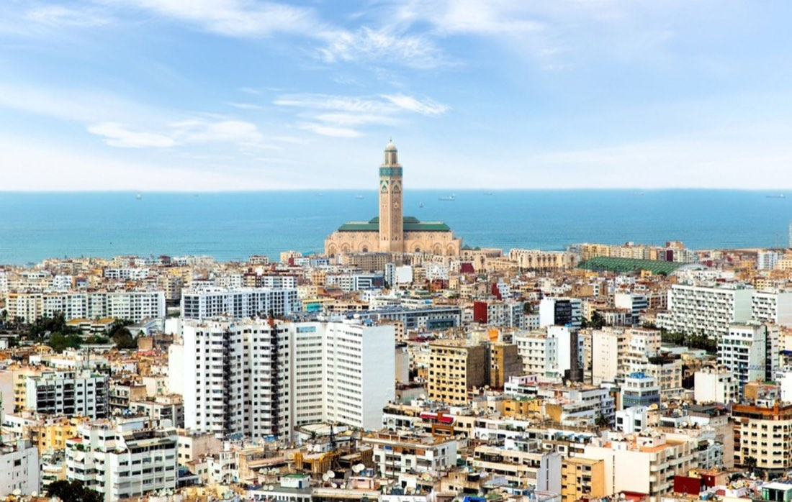
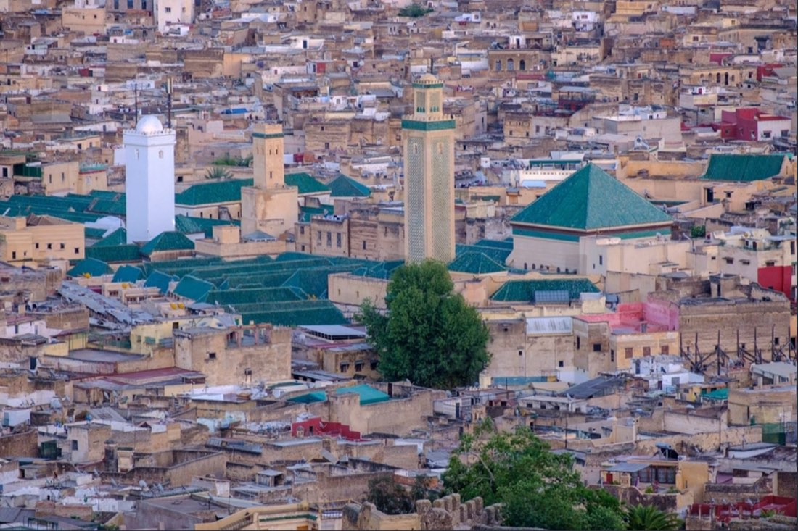
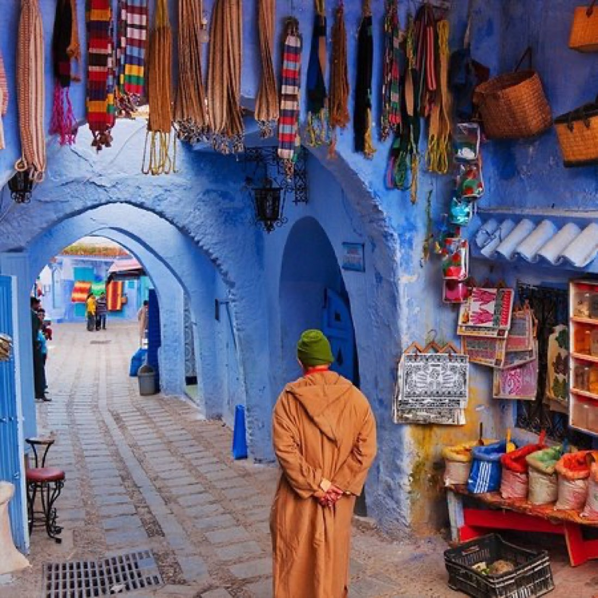

Kazablanka Turu: Tarih, Kültür, Gece Hayatı
Kazablanka: Fas'ın kalbi, Atlas'ın beyaz şehri.
Devamını oku →

Fèe’in dar sokaklarında yürürken, geçmişin sesi kulağınıza fısıldar gibi olur. Bu sesin en gür yankılandığı yerlerden biri ise şüphesiz Karaouïne Üniversitesi’dir. Sadece Fas’ın değil, tüm İslam dünyasının gözbebeği olan bu kurum, 859 yılında vizyon sahibi bir kadın olan Fatıma el-Fihri tarafından kurulmuştur.Bugün UNESCO tarafından dünyanın hâlâ aktif olarak eğitim veren ve mezuniyet sağlayan en eski üniversitesi olarak tanınmaktadır.
İlk zamanlarda küçük bir cami olarak başlayan Karaouïne, zamanla büyüyerek ilim ve hikmetin merkezi hâline gelmiş; matematik, astronomi, tıp, felsefe ve fıkıh gibi pek çok alanda derslerin verildiği bir külliyeye dönüşmüştür. Bu duvarlar arasında İbn Rüşd, İbn Haldun ve hatta Musevi düşünür Maimonides gibi büyük isimler ders vermiş ya da sohbet meclislerinde bulunmuştur.
Karaouïne Üniversitesi’nin mimarisi de bir o kadar etkileyicidir. Zellij mozaikleri, oymalı ahşap kapıları ve sade ama derin anlamlar taşıyan avluları, öğrencilerin ve ziyaretçilerin ruhuna dokunur. Burada sadece bilgi değil; ahlâk, tevazu ve hikmet de öğretilmiştir.
Bugün Fes’i ziyaret eden herkes için Karaouïne sadece bir yapı değil, zamanın bile eğilip selam verdiği kutsal bir mekândır. fastur.com.tr turlarında bu kutsal mekânı rehber eşliğinde ziyaret edebilir, hem mimarî detayları hem de tarihi hikâyeleri yerinde dinleyebilirsiniz.
“Bir üniversite düşün ki bir kadının duasıyla doğsun, bilginlerin nefesiyle büyüsün ve çağlara meydan okusun... İşte Karaouïne.”
Fes’in kalbinde, zamana meydan okuyan sade bir cami olarak başladı her şey… Fatıma el-Fihri, 9. yüzyılda Tunus’un Kairouan kentinden Fas’a göç eden varlıklı bir tüccarın kızıydı. Babasının vefatıyla ona kalan serveti, şaşaalı bir hayat için değil; halkın ilimle buluşacağı bir mekân inşa etmek için kullandı. 857 ile 859 yılları arasında inşa edilen bu yapı, zamanla yalnızca ibadet değil, aynı zamanda eğitim ve düşüncenin merkezi hâline geldi.
Fatıma, bu yapıyı kurarken sadece bir mimari eser bırakmak istemedi; amacı, kadın-erkek ayırt etmeksizin bilgiye ulaşabilecek bir toplum yaratmaktı. Bu yönüyle Karaouïne, ilk günden itibaren bir camiden çok daha fazlası oldu. Müderrisler, müzakere halkaları, kütüphaneler ve ilmi meclislerle kısa sürede İslam dünyasının batıdaki en önemli eğitim merkezlerinden biri hâline geldi.
Bugün hâlâ eğitim vermeye devam eden bu üniversite, dünyanın aktif olarak mezun veren en eski üniversitesi unvanına sahip. O dönemin şartlarında bir kadının böylesine büyük bir vakıf kurması, sadece İslam tarihine değil, dünya eğitim tarihine de damgasını vurmuştur.
Eğer siz de bu tarihi yapıyı yerinde görmek, Fatıma el-Fihri’nin mirasına tanıklık etmek istiyorsanız, fastur.com.tr’un Fes turlarına mutlaka göz atın. Rehberli turlarımız sayesinde üniversitenin tarihçesini sadece okumakla kalmayacak, avlusunda yürürken bu hikâyeyi hissedeceksiniz.
“Bir kadının duasıyla yükselen bu yapı, hâlâ binlerce kalbe dokunuyor. Fes’e giderseniz, sadece taşlara değil, niyete de bakın...”
Fes’in medinasında sessizce yükselen Karaouïne Üniversitesi, sadece bilgiyle değil, ince bir sanat anlayışıyla da inşa edilmiş bir yapı. İlk adımınızı attığınızda gözünüze çarpan şey sadelik değil; aksine, İslami mimarînin zarif ayrıntılarla zenginleştirilmiş bir bütünü. At nalı şeklindeki kemerler, karmaşık muqarnas süslemeleri ve her biri sabırla işlenmiş zellij mozaikleri, bu mabedin ilim kadar sanatı da kutsadığını fısıldar size.
Kompleksin her bir köşesi ayrı bir anlam taşır. 10. yüzyılda Emevî halifesi Abd al‑Rahman III tarafından inşa ettirilen minare, hâlâ sapasağlam ayakta durur ve sabah ezanlarını asırlık taşların yankısıyla duyurur. Bu detay, Karaouïne’in yalnızca Fas’a değil, Endülüs etkisine de ne kadar açık olduğunu gösterir. Yapının içinde yer alan bronz avizeler, geniş avlularda süzülen ışıkla dans ederken, süsleme sanatı adeta ruhunuza dokunur.
Ahşap işçiliği ise başlı başına bir başyapıt. Giriş kapıları ve mihrap çevresi, oyma ahşaplarla bezeli; burada her detayda bir ustanın nefesi saklı. Avluda yer alan abdest şadırvanı bile öylesine değil; estetikle temizliğin buluştuğu bir merkez gibi düşünülmüş. Öğrencilerin ders aralarında gölgesinde oturduğu revaklar hâlâ huzur veriyor insana.
Bu mimarî güzelliği kelimelerle anlatmak sınırlı kalabilir. İşte tam bu yüzden, fastur.com.trüzerinden Fes turlarına katılan gezginler için Karaouïne ziyareti, bir mimarlık dersine dönüşüyor. Rehberlerimiz bu detayları hem tarihî hem estetik yönüyle açıklarken, siz de zamanın içinden geçer gibi hissediyorsunuz.
“Karaouïne’e sadece gözle değil, gönülle bak… Her kemerde, her taşta yüzyılların duası işli.”
Karaouïne Üniversitesi’ni özel kılan şey sadece mimarisi ya da tarihi değil; aynı zamanda yüzyıllar boyunca hiç kesintiye uğramamış bir eğitim anlayışıdır. Burada öğretilen şey sadece bilgi değil, aynı zamanda erdem, edep ve hikmettir. Kuruluşundan itibaren geleneksel İslam ilimlerine –tefsir, hadis, fıkıh, kelam– büyük önem verilmiş, ancak zamanla astronomi, matematik, tıp ve felsefe gibi dünyevî ilimler de müfredatta yerini almıştır.
Karaouïne’de eğitim, uzun yıllar boyunca şifâhî olarak, yani sözlü aktarım yoluyla gerçekleşmiştir. Talebeler ders halkalarında oturur, hocayı dinler, sonra sınav gibi değil, bir tür sohbet içinde kendilerini ifade ederlerdi. Bu gelenek hâlâ bazı alanlarda devam ediyor. Özellikle diploma sistemi, bir öğrencinin hocası önünde yaptığı sözlü savunmayla tamamlanıyor; bu da eğitimi sadece bilgiye değil, anlama ve anlatma becerisine de dayandırıyor.
1965 yılında Karaouïne, Fas devleti tarafından modern üniversite statüsüne kavuşturuldu. Bugün bünyesinde Arap dili, İslami ilimler ve hukuk gibi bölümler yer almakta. Ancak geleneksel sistemle modern akademik yapının uyum içinde sürdürüldüğü nadir yerlerden biri olmaya devam ediyor.
Eğer bu benzersiz eğitim sistemini yerinde görmek, avlularda hâlâ yankılanan ilim seslerini duymak isterseniz, fastur.com.tr’un Fes tur programlarında Karaouïne Üniversitesi özel bir durak olarak yer alıyor. Rehberlerimiz eşliğinde, bu eğitimin ruhuna tanıklık edebilir, sorularınızı yerinde sorabilirsiniz.
“İlim, Karaouïne’de sadece öğrenilmez; yaşanır, içselleştirilir ve nezaketle aktarılır.”
Karaouïne Üniversitesi sadece Fas’ın değil, tüm İslam dünyasının ilimle aydınlandığı bir merkezdi. Öyle ki, 10. ve 12. yüzyıllar arasında yaşanan İslam’ın Altın Çağı’nda burası, fikirlerin, keşiflerin ve entelektüel tartışmaların yuvası hâline geldi. Yalnızca dini ilimler değil, matematik, astronomi, cebir, tıp ve felsefe gibi bilimler de burada gelişti. Bu ilim hareketliliği, zamanla Endülüs aracılığıyla Avrupa’ya taşındı.
Özellikle Aristo felsefesinin İbn Rüşd ve İbn Sina gibi büyük İslam düşünürleri tarafından yorumlanması, Karaouïne’deki tartışma halkalarında şekillendi. Bu yorumlar, ilerleyen yüzyıllarda Avrupa’da skolastik düşüncenin kırılmasına ve Rönesans’ın doğmasına zemin hazırladı. Batı’daki bilimsel sıçramalarda bu üniversitenin izini sürebilmek, aslında ortak bir insanlık mirasını görmemizi sağlıyor.
Aynı zamanda Karaouïne’de geliştirilen hastalık tanı yöntemleri, astronomik ölçümler ve mantık temelli hukuk yorumları, sadece bölgesel değil; küresel ölçekte etki yarattı. Birçok Avrupalı seyyah ve bilim insanı Fes’e gelip buradaki ilmi çevreleri yerinde gözlemledi.
Bugün hâlâ bu büyük mirasa dokunmak isteyen gezginler için fastur.com.tr, Fes turlarında Karaouïne Üniversitesi'ni özel olarak ziyaret edilecek yapılar arasına almıştır. Rehber eşliğinde yapılan bu ziyaretlerde, hem mimariyi hem de bilim tarihini yakından tanıma fırsatı bulursunuz.
“Fes’te bir üniversite vardı; yalnızca kitaplarla değil, fikirlerle dünyayı değiştirdi.”
Bir üniversitenin büyüklüğü yalnızca duvarlarının kalınlığıyla değil, içinden geçen zihinlerin derinliğiyle ölçülür. Karaouïne Üniversitesi, bu anlamda tarihe damga vurmuş pek çok düşünürü ağırlamış, bazılarına ise ilim yolculuğunun ilk duraklarından biri olmuştur.
Maimonides gibi hem Yahudi hem İslam dünyasında etkili olmuş bir tıpçı ve filozof, burada eğitim almış; farklı inançların bilgi etrafında nasıl bir araya gelebildiğini bizlere göstermiştir. İbn Rüşd, Aristo’nun eserlerine yaptığı yorumlarla Avrupa düşüncesini etkilerken, Karaouïne’deki sohbet ve tartışma halkalarından ilham almıştır.
İbn Haldun, toplumsal yapıyı çözümleyen öncü fikirleriyle sosyolojiye yön vermiş; İbn Arabi ise tasavvufun derinliklerine burada açılmıştır. Leo Africanus, Afrika kıtasını Batı’ya tanıtan ilk entelektüel seyyahlardandır ve eğitimini bu ilim merkezinde tamamlamıştır.Hatta Orta Çağ'da Papa II. Silvester, Karaouïne'de öğrendiği astronomi ve matematik bilgisini Avrupa’ya taşımış, orada bilimsel uyanışın kıvılcımını çakan isimlerden biri olmuştur.
Bu isimler sadece Karaouïne’in öğrencisi ya da misafiri değil; aynı zamanda birbirinden çok farklı coğrafya ve inançların bilgi ekseninde kesiştiği evrensel bir merkezin kanıtıdır. Bu yüzden Karaouïne, İslam dünyasının ötesinde bir anlam taşır.
Eğer siz de bu büyük akılların iz sürdüğü duvarlara dokunmak isterseniz, fastur.com.tr aracılığıyla katılacağınız Fes turlarında Karaouïne Üniversitesi'ni rehber eşliğinde gezebilir, bu isimlerin hikâyelerini yerinde dinleyebilirsiniz.
“Aynı avluda İbn Haldun’un kalemiyle Maimonides’in reçetesi yankılanırsa, orası artık yalnızca bir okul değil, insanlık mirası olur.”
Fes’in dar sokaklarının ardında saklı olan bu üniversite, yüzyıllardır ilmin sessiz fakat derin bir şekilde aktığı bir nehir gibidir. Ve bu nehir, artık yalnızca Fas’a değil, tüm dünyaya seslenmektedir. UNESCO, Karaouïne’i Dünya Mirası ilan ederek onu koruma altına alırken, Guinness Rekorlar Kitabı da bu eşsiz kurumu, “dünyanın hâlâ aktif olarak eğitim veren en eski üniversitesi” olarak tescillemiştir.
Bu unvanlar sadece taşlara, sütunlara verilmiş onurlar değildir. Asıl takdir, bu üniversiteyi kuran Fatıma el-Fihri’ye aittir. O, 9. yüzyılda bir kadının yalnızca dua değil, aynı zamanda yüksek bir vizyonla eğitime yatırım yapabileceğini tüm dünyaya göstermiştir. Bugün onun ismi, eğitimde kadının yerini simgeleyen evrensel bir sembol hâline gelmiştir.
Karaouïne’in uluslararası tanınırlığı, sadece akademik çevrelerle sınırlı değil. Birçok modern üniversite, onun eğitim sisteminden ilham aldı. Avrupa’daki ilk üniversitelerin temellerinde bu yapının gölgesi hâlâ hissedilir. Mimarisinden eğitime, yönetiminden müfredatına kadar pek çok yönüyle hâlâ referans alınan bir kurumdur.
Bu nedenle Karaouïne’e yapılacak bir ziyaret, sadece turistik bir gezi değil; aynı zamanda dünya tarihine ve insanlık mirasına bir selam duruşudur.Eğer bu eşsiz mirası yerinde görmek isterseniz, fstur.com.tr üzerinden düzenlenen Fes turlarına katılabilir, bu ilim yuvasını rehberlerimiz eşliğinde gezebilirsiniz.
“Karaouïne’in taşları yaşlı, ama itibarı gençtir. Onu dünya tanır, ama en çok gönülden anlayanlar kıymet bilir.”
Karaouïne Üniversitesi’nin hikâyesi sadece geçmişte parlayan bir yıldız değil; aynı zamanda değişime ayak uydurabilen, köklerinden kopmadan dönüşebilen dinamik bir kurumun hikâyesidir. 9. yüzyılda bir cami olarak başlayan yolculuğu, yüzyıllar boyunca eğitimle genişledi. Ancak asıl dönüşüm, 20. yüzyılın ortalarında başladı.
1947 yılında Fas devleti, Karaouïne’i resmî eğitim sistemine entegre etti. Bu, yapının sadece bir vakıf üniversitesi olmaktan çıkıp, kamusal bir kurum haline gelmesi anlamına geliyordu. Ardından gelen 1960’lı yıllarda, üniversite önemli bir modernleşme sürecine girdi: Müfredatlar güncellendi, yönetim sistemleri reforme edildi, yeni fakülteler açıldı. Batı modeliyle uyumlu bir yapı kurulmaya çalışıldı.
Ancak zaman ilerledikçe, bu modernleşmenin geleneksel kimliği zedelediği yönünde eleştiriler ortaya çıktı. Ve böylece, 1988 yılında Karaouïne kendi köklerine yeniden yönelmeye başladı. Geleneksel eğitim yöntemleri –özellikle sözlü aktarım ve icazet sistemi– tekrar canlandırıldı. Bugün ise hem modern akademik içerikler, hem de klasik İslam ilimleri bir arada öğretiliyor. Bu sentez, Karaouïne’i sıradan bir üniversite değil, kültürlerarası bir köprü hâline getiriyor.
Bu dönüşüm sürecini yerinde görmek, mimari kadar eğitimin de nasıl evrildiğine tanık olmak isterseniz, fastur.com.tr’un Fes tur programlarında Karaouïne Üniversitesi özel bir durak olarak ziyaret edilmektedir. Rehberlerimizle birlikte, geçmişle geleceğin nasıl bir arada yaşadığını keşfedebilirsiniz.
“Değişmek, özünü kaybetmek değil; kökleriyle birlikte büyüyebilmektir. Karaouïne bunu asırlardır başarıyor.”
Bir şehrin en değerli hazinesi altın değil, koruduğu bilgi ve kültürel mirastır. Karaouïne Üniversitesi de işte bu anlamda Fes’in kalbi gibidir. Burada sadece ders verilmedi; fikirler olgunlaştı, çağlar boyunca akıllar yoğruldu. Üniversitenin kütüphanesi, yüzyıllardır korunan binlerce el yazması ile İslam ilim dünyasının belleğini hâlâ canlı tutmaktadır.
Bu yazmalar arasında matematikten tıbba, tasavvuftan edebiyata kadar pek çok alanda özgün eser bulunur. Her biri, zamanın en seçkin müellifleri tarafından kaleme alınmış, nadide nüshalar olarak korunmaktadır. Bu yönüyle Karaouïne, yalnızca bir eğitim kurumu değil, aynı zamanda bir arşiv, bir medeniyet hafızasıdır.
Akademik kültür ise hâlâ nefes alıyor burada. Geleneksel sözlü savunma sistemiyle verilen diplomalar, sadece bir belge değil; ilmin özümsendiğini gösteren birer icazet anlamına geliyor. Öğrenciler, törenle bu unvanı alırken, hem ilim hem de ahlak yolculuğunun bir parçası olduklarını hissediyor.
Ayrıca Karaouïne’deki akademik törenler, Fas’ın ve İslam dünyasının entelektüel geleneğini yaşatan önemli anlar olarak kabul ediliyor. Bu törenlere katılmak, adeta geçmişe açılan bir kapıdan içeri adım atmaktır. İşte bu yüzden, fastur.com.tr ile düzenlenen Fes turlarında Karaouïne Üniversitesi’nin kapısından içeri girdiğinizde yalnızca taş yapılar değil, asırların ilim ruhu sizi karşılar.
“Kitaplar sessizdir ama bin yıl önceden konuşur… Karaouïne’de bu sesi duymak için sadece kulak değil, kalp de gerekir.”
Yüzyıllar boyunca ilimle, kültürle, dua ve düşünceyle yoğrulan Karaouïne, bugün hâlâ dimdik ayakta. Ama sadece geçmişin nostaljik bir kalıntısı değil; bugünün dünyasına da nefes alan, yaşayan bir mekân. Cami olarak ibadete açık olan bu yapı, aynı zamanda hâlâ akademik eğitimin sürdüğü bir üniversite olarak işlevini devam ettiriyor.
Geleneksel usuller korunurken, modern eğitim anlayışıyla harmanlanmış bir sistem benimsenmiş durumda. Öğrenciler artık hem İslami ilimlerde derinleşiyor hem de günümüzün sosyal ve beşerî bilimleriyle besleniyor. En önemlisi de, Karaouïne artık sadece erkeklere açık değil. Kadın-erkek eşitliği ilkesiyle öğrenci kabul ediliyor; tıpkı kurucusu Fatıma el-Fihri'nin vizyonuna uygun şekilde.
Bu özellikleriyle Karaouïne sadece akademik çevrelerin değil, kültür ve tarih meraklısı gezginlerin de radarında. Ancak buraya gelişi sadece fotoğraf çekip dönmek gibi düşünmeyin. Avlusuna adım attığınızda sizi tarihle birlikte bir sükûnet, bir ruh derinliği sarar. Mimari detayları izlerken, yılların ağırlığı ve ilmin asaleti kendini hissettirir.
Eğer siz de Karaouïne’in gölgesinde, İslam medeniyetinin diriliğini hissetmek, oradaki atmosferi soluyarak öğrenmek isterseniz, fastur.com.tr üzerinden Fes turlarına katılabilirsiniz. Rehberlerimiz, bu eşsiz yapının yalnızca tarihini değil, ruhunu da size aktaracaktır.
“Karaouïne, geçmişin bilgeliğini bugünün kalbine fısıldar… Ve bu fısıltıyı duyanlar, dünyaya artık başka bakar.”
Karaouïne Üniversitesi, bir taş yapıdan fazlasıdır. O, medeniyetin birikimi, kadim bilginin durağı ve insan aklının sabırla yoğrulduğu bir ilim ocağıdır. 857 yılında Fatıma el‑Fihri’nin dua ve ilimle ördüğü temeller, bugün hâlâ hem öğrenci hem de ziyaretçi ayak sesleriyle yankılanıyor. Her adımda bir dua, her duvarda bir fikir, her satırda bir çağ vardır burada.
Bu yapı sadece geçmişi temsil etmiyor. Aynı zamanda modern çağın içinde gelenekten kopmadan yürüyebilen bir üniversite olarak da önem taşıyor. Ne sadece bir müze, ne sadece bir cami, ne sadece bir okul… Karaouïne, tüm bu kimlikleri aynı anda taşıyabilen endüljan bir ruh gibi.
Karaouïne’in hikâyesi bize şunu fısıldıyor: Bir kadının niyetiyle başlayan yolculuk, çağlar boyu sürebilir. Fatıma el‑Fihri’nin adanmışlığı, bugün bile gençlerin yüreğinde bir ışık, düşünürlerin dilinde bir örnek olarak yankı bulmakta.
Bu ilham verici atmosferi yerinde solumak, hem geçmişe hem bugüne dokunmak istiyorsanız, fastur.com.trile düzenlediğimiz Fes turları sizin için eşsiz bir kapı aralayacaktır. Rehberlerimiz eşliğinde Karaouïne’in sadece taşlarını değil, ruhunu da görme fırsatınız olur. Ve belki siz de kendi yolculuğunuzda yeni bir niyetin adımlarını atarsınız.
“Bazen bir şehir değil, bir yapı çağırır insanı… Karaouïne de işte öyle bir çağrıdır. Duyan, dönemez.”
kaynak: fasturizm.com

Kazablanka: Fas'ın kalbi, Atlas'ın beyaz şehri.
Japonya'ya gitmeden önce bilmeniz gerekenler: şehirler, lezzetler ve ipuçları.

Fas turu hakkında merak edilen 20 soru ve cevapları.